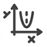
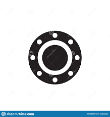

prepa
home
chimie
analyse
algebre 
STA
phy
CFM 
info
langue
Cours, résumés & TDs
Mr Amor
Cours
Eléments de traitement du signal
Rappel et complément d’électrostatique
Induction électromagnétique
Ondes électromagnétiques planes dans le vide OPPM
propagations d'ondes dans un milieu dispersif plasma
Propagation et réflexion d'onde sur un conducteur
Postulats de l'électromagnétisme
Polarisation d'une onde E.M
Interférences par division du front d’onde
Interférences par division d’amplitude
Interférences à N ondes
Physique quantique
Rayonnement thermique
Rappel thermodynamique 1ère
Transferts thermiques
Eléments de thermodynamique statistique
TD
TD1 éléctronique filtre
TD 1 correction
TD 2 induction électromgnétique
TD 2 correction
TD 3 équations de maxwell et ondes dans le vide + corrigé
TD 4 Propagation dans un milieu dispersif
correction TD 4
correction TD4 suite
TD 6 Interférences lumineuses
TD 6 correction
TD 7 Interférences à N ondes + corrigé
TD 8 Transfert thermique
TD 8 correction
TD 9 Physique quantique + corrigé
TD 10 statistique
TD 10 correction
Résumé
Electronique
Electornique numérique
Induction
Equations de Maxwell
Magnétostatique
Ondes
Interférences à 2 ondes
Quantique1
Quantique2
Thermo1
Thermo2
Statistique
Transfert de chaleur
TDs & Cours Mr Mehdi Brinsi
Signaux et filtre
Cours
serie signaux périodiques
serie traitement de signal
DM
DM2
Electromagnetisme
Induction
cours induction
DM dipole magnetique
Dm induction
rappel mecanique
serie induction
theo moment cinetique
Maxwell
cours equations de maxwell
resume equations de maxwell
serie equations de maxwell
Onde
cours ondes
dm
onde dans le vide
polarisation
propagation d une onde dans un plasma
rayonnement dipolaire
serie ondes
Td rayonnement dipolaire
Optique
dm
interferences a ondes multiples
rappel optique
serie interferences
Mecanique quantique
Cours quantique
TD quantique
Transfert thermique
cours en vidéo
TD Transfert thermique
Probleme 1
Probleme 2
Physique statistique
cours phy stat
cours thermodynamique statistique
cours physique statistique
serie phy stat
Dm
Attia
Champ EMG dans un condensateur plan cylindrique
Optique
Quantique
Induction
Résumé + série magnétostatique et induction
suite correction induction
cours magnéto + induction +correction série magnétostatique
série magnétostatique + ex1 induction
correction moteur continue +transformateur+pince ampéremétrique+des series
Onde électromagnétique
résumé onde + TD
correction exercice 2 polarisation + ex effet de peau
cavité résonante +serie2 + ex1 serie3
Plasmon+ effet de Faraday
Rayonnement
Correction guide d'onde réctiffié
Suite rayonnement+guide d'onde
Revision onde+ antenne + force centrale
Maxwell
Résumé + série maxwell
Supraconducteur + conducteur ohmique torique
Comportement frequentiel +cable coaxial
Suite corection cable coaxial +ex1 serie onde +resume polarisation
Dipôle
Série dipôle
Série dipôle correction
Resumé dipôle + série de fourrier
Optique
Série optique
Optique géométrique
Fentes de Young et cohérence temporelle
Mirroir de Llyod /Mirroir de Fresnel /Biprisme de Fresnel
Michelson +resumé des figures d'interférences
Lames à faces parallèles + coin d'air
Diffraction
Quantique
Série quantique
Resumé quantique + effet photoélectrique + série phy quantique
Suite ex 4 5 et 7
Fin quantique + résumé statistiques
Statistique
Résumé + série statistique
Ex 1+2+3
Fin stat
stat Borhen
Cours Neil Jomaa
Les équations de Maxwell
Ondes dans le vide
Propagation des ondes dans le plasma
Réflexion guidage et cavité
Rayonnement dipolaire
Action de Laplace/ Induction électromagnétique
Généralité optique cohérence temporelle
Interférences division de front d'onde/ Amplitude
Interférences à N ondes
Physique quantique
Transfert thermique
Physique statistique
Révision concours physique
Support de cours transfert thermique
Cours Physique Mr Mourad
CHAP-1-Signaux périodiques
CHAP-2_L'ectronique numérique
CHAP-3-Action d'un champ magnétique
CHAP-4-Induction électromagnétique
CHAP-5-Les équations de Maxwell
CHAP-6-Propagation des OEM dans levide
CHAP-7-Conducteur
CHAP-8-Plasma
CHAP-9-Rayonnement dipolaire
Chap-10-Introduction aux interférences lumineuses
Chap-11-Interférences entre deux ondes lumineuses
CHAP-12-Dispositif intérentiel par division du front d'onde
CHAP-13-Dispositif intérentiel par division d'amplitude
CHAP-14-Superposition de N ondes
CHAP-15-Transfert thermique
CHAP-16-Introduction au monde quantique
CHAP-17-Evolution d'une particule quantique
CHAP-18-Introduction à la physique statistique
Opérateurs
Outil math physique
Examen et DS
DS1 Physique IPEIB 2021
DS1 IPEIB 2020(filtre)
DS2 IPEIB 2021
EXAM2 IPEIB 2022
TDs
TDs Physique IPEIT
TDs Physique IPEIB 18-19
physique ondes
polarisation ondes
td électrostatique ipeib
TD interferences lumineuses 2019_2020 IPEIT
TD interferences lumineuses 2020-2021 IPEIT
TD interferences lumineuses IPEIT
TD mécanique quantique 2019-2020 IPEIT
TD thermodynamique statistique
TD transferts thermiques 2018-2019 IPEIT
Révision Tarek
Révision 1 traitement de signal
Révision 1 traitement de signal corrigé
Révision 3 filtres
Révision 3 filtres corrigé
Révision 4 Induction E.M
Révision 4 Induction E.M corrigé
Révision 6 diffraction
Révision 6 diffraction suite
Révision 8 transfert thermique
Révision 8 transfert thermique corrigé
Révision 9 mécanique quantique
TD mécanique quantique
Complément de cours de mécanique quantique
Problème induction moteur
Problème induction moteur corrigé
Cours thermodynamique statistique
Puits de potentiel symétrique
Cours thermo 1ère mme samira
Cours thermo
TD